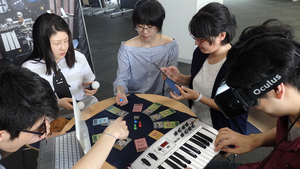

Copyright© 2017 Hokkaido Information University
Game School Area http://www.do-johodai.ac.jp
北海道からの参加です！ 私たちは、北海道情報大学です。本学情報メディア学科にはゲームプログラミングコースがあります！ ゲーム開発を中心に企画立案、キャラクターデザインなども勉強できます。今回は授業「プロジェクト・トライアルII」でのゲーム作品、また、ゲーム制作を専門とする森川悟研究室での作品などを集めて展示する予定です。展示ブースも私たちがデザイン・制作します。私たちの成果をぜひ見に来て下さい。